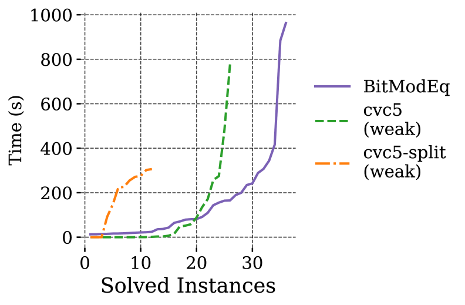
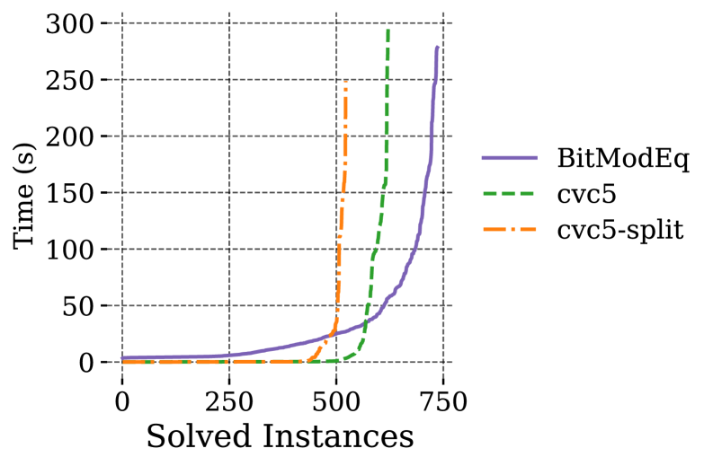

Automating Bitvector and Finite Field Equivalence Proofs in Lean
Verifying Zero-Knowledge Proof circuit encodings requires proving correctness of statements involving both bitvector and finite field operations. Existing approaches are either manual (requiring substantial human effort in ITPs) or rely on SMT solvers that scale poorly due to difficulties with conversion operators and inequality reasoning.
The authors present BitModEq, a Lean tactic that leverages range lemmas and case analysis to produce verified translations from finite fields to bitvectors. The workflow operates in four phases: converting finite field terms to naturals, discharging natural number inequalities via range analysis, converting remaining naturals to bitvectors, and solving the final bitvector goal via bit-blasting (bv_decide). The ITP-based ff2bv encoding avoids bit splitting and existential quantifiers that bottleneck SMT solvers.

BitModEq combined with bit-blasting solves 19% more ZKP arithmetization benchmarks than state-of-the-art SMT solvers. On Jolt benchmarks, BitModEq solves 24/24 Lasso and 12/15 T&S instances versus cvc5-weak solving 21 and 5 respectively. BitModEq also produces zero statement-generation timeouts compared to up to 15 for SMT approaches.
